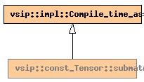

Global Namespace
Inheritance Tree
Inheritance Graph
Name Index
template <
dimension_type
D
>
struct
vsip
::
const_Tensor
::submatrix
File:
../../../vsip/tensor.hpp

-
Public Typedefs
impl::Sliced_block
block
const_Matrix
<T,
block
>
impl_type
const_Matrix
<T,
block
>
impl_const_type
impl::Subset_block
<
block
>
subblock
const_Matrix
<T,
subblock
>
type
const_Matrix
<T,
subblock
>
const_type
Generated on Sat Apr 17 11:13:29 2010 by
synopsis
(version 0.12)


 synopsis (version 0.12)
synopsis (version 0.12)